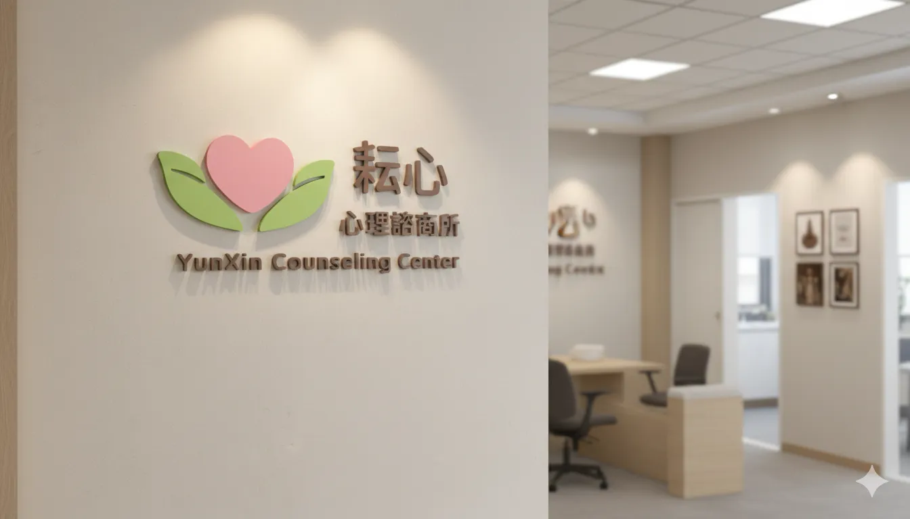

關於耘心
我們相信，每個人都值得在安全、被理解的關係裡，重新靠近自己。耘心陪您把心裡凌亂的感受慢慢整理成能被看見、能被照顧的方向。

成立宗旨
我們相信，每個受困的靈魂，都有破繭的奇蹟；每段受傷的經歴，都有療癒的可能。然而我們也懂，破繭前的掙礼、療傷中的煎煞，常常十分難熬而令人備感挫折，或甚至萌生放棄的念頭。
正因為生命難題無所不在，耘心心理諮商所結合專精各種領域的諮商心理師、臨床心理師與社工師，以「當事人為中心」的服務理念，重視個人隱私的設計，針對大眾的心理疑雖雜症提供多元議題的諮商服務。
創辦人的話
「黑夜總會過去，讓我們陪你找回內在的光芒。」
走入心理諮商，往往需要很大的勇氣。許多人在來到諮商室前，已經獨自撐過了無數個迷茫、焦慮與不安的夜晚。在耘心，我們不急著給予批判或貼上標籤，而是由衷希望能成為一座燈塔，在晦暗中溫柔接住每一份疲憊。
『耘心』二字取自耕耘心靈之意。心靈就如同一方土壤，需要時間灌溉、除草與陪伴，方能再次萌發新芽。不論您正身處人生的哪一個十字路口，我都期盼這裡能成為您最安心的停泊點，讓我們一同並肩，找回內在的光芒與力量。
創辦人 李予澄
空間環境
隱密、溫馨且充滿綠意與木質調的空間，只為讓您能全然放鬆卸下心防。

「蒔光」諮商室

「聽潮」諮商室

「棲林」諮商室

「映曦」諮商室
什麼時候可以來談談
不需要等到撐不下去才尋求協助。當您開始覺得某些感受反覆出現、關係卡住、生活失去方向，諮商就可以是一個整理自己的起點。
情緒與壓力
焦慮、低落、失眠、長期緊繃、身心疲憊。
關係與家庭
伴侶溝通、親子互動、人際界線、家庭壓力。
自我探索
自我價值、生命方向、重大選擇與轉換期。
創傷與失落
分離、失落、過往傷痛與難以消化的經驗。
地理位置
地址： 基隆市信義區信一路150號5樓A室
交通： 搭乘公車至「基隆女中」或「義七路口」下車，步行約 3-5 分鐘即可抵達。周邊設有收費停車場。